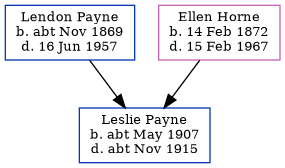

Leslie Fitzhugh Payne cMay 1907 - c1915
[ Home ] | [ Calendar ] | [ Surnames Index ] | [ Family History ]The child of Lendon Payne (a postman) and Ellen Horne, Leslie Payne, the first cousin twice-removed on the father's side of Nigel Horne, was born in Wellingborough, Northamptonshire, England c. May 19071,2. On Apr 2, 1911, he lived on 71 Grange Road, Margate, Kent, England3.
He died c. Nov 1915 in Willesden, London, England2.
Parents
- Lendon Goodwin was born c. Nov 1869
- Ellen Mary Ann was born on Feb 14, 1872
Citations
- England & Wales births 1837-2006 - Findmypast
- England & Wales deaths 1837-2007 - Findmypast
- 1911 Census for England & Wales - Findmypast (was age 3 and the son of the head of the household)
Media
1911 Census for England & Wales - GBC/1911/RG14/04489/0513/7
England & Wales births 1837-2006 - BMD/B/1907/2/AZ/000466/022
England & Wales deaths 1837-2007 Transcription - BMD-D-1915-4-AZ-000806-136
Family Tree
Generated by Ged2Site. Last updated on Jul 20, 2025